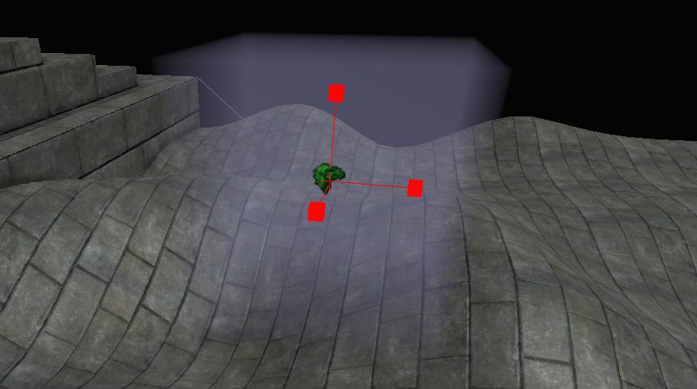
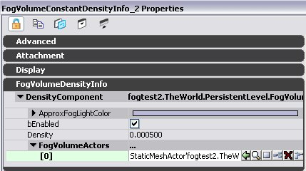
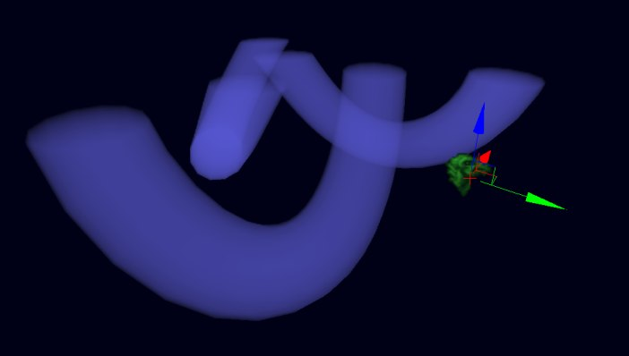
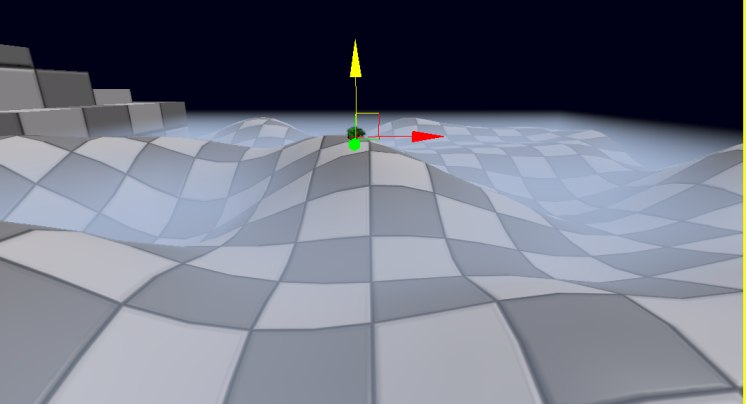

UDN
Search public documentation:
FogVolumesJP
English Translation
中国翻译
한국어
Interested in the Unreal Engine?
Visit the Unreal Technology site.
Looking for jobs and company info?
Check out the Epic games site.
Questions about support via UDN?
Contact the UDN Staff
中国翻译
한국어
Interested in the Unreal Engine?
Visit the Unreal Technology site.
Looking for jobs and company info?
Check out the Epic games site.
Questions about support via UDN?
Contact the UDN Staff
Fog Volumes
ドキュメントの概要: Fog Volumes の使用法、ベストプラクティスや制限についての説明。 ドキュメントの変更ログ: Daniel Wright により作成 最新のアップデート：- DanielWright – 2008 年 9 月 8 日Versions
Fog Volumes were introduced in QA_APPROVED_BUILD_MAR_2007. その後すぐに、Fog Volume による透明性フォグ サポートは追加され、QA_APPROVED_BUILD_APRIL_2007 に入っています。パーティクル フォギングは QA_APPROVED_BUILD_MAY_2007 で有効化されました。また、クリッピング メッシュを伴う定数密度関数で同じような機能が利用可能なので、定数高度密度関数はこのビルドから削除されました。これは、コンパイルされたシェーダの数を減少させ、より効率的になります。自動セットアップ方法は QA_APPROVED_BUILD_FEB_2008 に追加され、それ以前は手動でのセットアップ方法のみサポートされていました。QA_APPROVED_BUILD_APR_2008 では、Fog Volume コストを含めるため、シェーダの複雑さが拡張されました。QA_APPROVED_BUILD_JUL_2008 では、密度の設定を 0 にすることは、bEnabled=False と同じ扱いを受けます。Fog Volumes とは?
A Fog Volumes は、 基本的に 3 つのものから成り立ちっています。: 密度関数、密度関数をクリップするメッシュ、フォグの色を定義するマテリアル。Fog Volumes は、メッシュにより結合されたり、複数の密度関数を操作するため、 HeightFogJP にて入手できる関数のスーパーセットです。Fog Volumes は、シームレスにボリューム内やボリュームに交差している不透明なオブジェクトに入っていくカメラを操作します。セットアップ方法
密度関数をそれをクリップするメッシュに関連付けるには 2 つの方法があります。これらは自動と手動方法と呼ばれています。簡単な自動セットアップ
- FogVolumeConstantDensityInfo を設定します。 (Generic Browser->Actor Classes->Info->FogVolumeDensityInfo にあります)

設置された後の定数密度 Fog Volume
自動セットアップの詳細
自動セットアップは、もっとも一般的な結果を得るために、なるべく少ないクリックでセットアップを終了できるようにデザインされています。新しい Fog Volume 情報アクタ を設置すると、静的メッシュ コンポーネントが自動的に追加され、Fog Volume をレンダリングするのに使用されます。このコンポーネントには、”FogVolumeConstantDensityInfo” -> “FogVolumeDensityInfo” -> “AutomaticMeshComponent” でアクセスすることができます。Fog Volume 情報をスケール、または回転すると、自動メッシュ コンポーネントもその Fog Volume に合うようにスケール、または回転します。これは、シェードされるのはメッシュなので、良いパフォーマンスをキープするために重要となってきます。可視性フォグ エリアをきちんとバインドする必要があり、そうでないと特に球体密度タイプで、無駄になるシェーディング演算があります。以下が付加的な自動セットアップの詳細です。- Fog Volume Info で DrawScale3d を 1.0 から変更すると、AutomaticMeshComponent が Fog Volume 情報のサイズとマッチしなくなる原因となります。
- 新しい球体の Fog Volume 情報を設置すると、DrawScale X、Y、Z は、AutomaticMeshComponent が Fog Volume 情報をしっかりバインドするようにセットアップされます。
- ”AutomaticMeshComponent” -> “PrimitiveComponent” -> “Scale” や “Translation” などから、Fog Volume 情報に対して、AutomaticMeshComponent の位置やスケーリングを変更することができます。
- 新しい Fog Volume 情報を作成すると、新しいマテリアル インスタンスがレベルに作成され、AutomaticMeshComponent に自動的に適用されます。これは、FogMaterial として設定されます。Generic ブラウザでマテリアルが選択されている場合は、そのマテリアルがペアレントとして使用されます。そうでない場合は、EngineMaterials.FogVolumeMaterial がペアレントになります。この新しいマテリアル インスタンスを、選んだマテリアルと互換性のある Fog Volume なら何にでも置換することができます。しかし、実際の Materials 配列を AutomaticMeshComponent で変更するのでなく、情報アクタで FogMaterial を変更するのを忘れないでください。
- Fog Volume Info の SimpleLightColor プロパティは、簡便性特性で AutomaticMeshComponent のマテリアル インスタンスの 'EmissiveColor' ベクトル パラメータとして設定されます。マテリアル インスタンスをオーバーライドして 'EmissiveColor' ベクトル パラメータを使用しない場合は、SimpleLightColor が機能しなくなります。
- AutomaticMeshComponent は、手動方法で使用されるメッシュと違い、エディタで選択可能ではないので、代わりに Fog Volume 情報アクタ自身を選択しなければいけません。
- AutomaticMeshComponent には、衝突、ライティング、シャドウイング フラグがすべて適切に設定されます。
簡単な手動セットアップ
- クローズした静的メッシュを配置します。
- FogVolumeConstantDensityInfo を設定します。 (Generic Browser->Actor Classes->Info->FogVolumeDensityInfo にあります)
- 静的メッシュを情報アクタの FogVolumeActors 配列 に追加します。
- これをするには、最初に設定した FogVolumeConstantDensityInfo のプロパティを開き、DensityComponent(密度コンポーネント)を展開します。
- 左上に見えるプロパティウィンドウをクリックします。
- ビューポートで静的メッシュを選択します。
- ロックしたため、プロパティウィンドウでは、情報アクタが表示されています。
- 「+」 をクリックし、FogVolumeActors 配列にエントリを追加します。
- 新しいエントリで、 [use selected actor] (選択したアクタを使う)ボタンをクリックします。

Set the static mesh in the FogVolumeActors array. この時点で、静的メッシュは Fog Volume としてレンダリングされるはずです。
手動セットアップの詳細
- 新しい FogVolumeActors エントリを追加すると、デフォルトの Fog Volume 設定でセットアップされます。これは、衝突、ライティング、シャドウイングを無効化します。新しい FogVolumeActor のメッシュ コンポーネント マテリアルも、EngineMaterials.FogVolumeMaterial を使用するように変更されます。これをオーバーライドするには、ターゲットの FogVolumeActor エントリにマテリアルを設定します。FogMaterial は手動セットアップで使用されません。*注意：プロパティ システムの制限のため、現段階では新しいエントリを追加すると FogVolumeActors 配列のすべてのエントリはデフォルトで設定されています。*最初に FogVolumeActors 配列内のすべてのエントリを設定し、その後にマテリアルを設定するのが良いでしょう。
- 手動セットアップは、複数のメッシュを 1 つの Fog Volume 情報に関連付けることができます。また、情報やメッシュを別々にアニメーション化することもできます。しかしながら、複数のパーツをセットアップしアニメーション化するのは単調なので、その場合は自動セットアップの方が簡単です。
密度関数
Fog Density 関数は、ワールドの様々な部分でのフォグの濃さを定義します。 UE3 では、それらの密度関数は、 FogVolumeDensityInfo アクタにより表現されます。関数のうちの １ つは配置され、割り当てられたFog Volumes アクタを持たなければいけません。下記に簡単なものから複雑なものの順で、様々な密度関数を紹介して行きます。FogVolumeConstantDensityInfo
これは、密度変数により設定される、あらゆる場所に同じ密度を持つ密度関数です。
図 2: 定数密度関数でレンダリングされた立方体。密度の定数があらゆる場所にあるため、フォグ情報アクタの場所は重要ではありません。
FogVolumeConstantHeightDensityInfo
FogVolumeConstantDensityInfo と同じですが、情報アクタの高さが制限されています。
図 3: 定数高さ密度を使用したメッシュ。メッシュは、 上方に続いていますが、Fog Volumes がFogVolumeConstantHeightDensityInfo の高さでクリップされています。
FogVolumeLinearHalfspaceDensityInfo
この密度関数は、プレーンと線形密度係数により定義されます。プレーンの一面の半空間は、フォグがかかります。このプレーンは、回転したり、情報アクタを回転したり移動したりすることで配置することもできます。この関数の密度は、プレーンからの距離で線形に増加するため、プレーン上で密度は 0 になり、距離の値が 1 は、PlaneDistanceFactor(プレーン距離因数)になります。線形密度は、カメラがプレーンにある時、半空間が決して固いエッジを形成しないよう確実にします。
図 4: 立方体メッシュにより結合された線形半空間密度関数。 密度はプレーンで 0 ではじまり、この例では、 XY プレーン座標のプレーンから遠ざかりながら増加します。ただし、これは、どの座標でも使用できます。
FogVolumeSphericalDensityInfo
球体密度関数は、MaxDensity(最大密度)の最大密度が中心にあり、 その密度は半球で 0 の値に向って４方向に落ち、スムーズでやわらかいエッジを形成します。球体の中心は、情報アクタの位置により定義され、情報アクタのスケーリングは、半球をスケールします。

図 5 & 6: スムーズエッジのある、球体密度関数。球体をクリップしないため、 図 5 で非可視になっているメッシュにより結合される。図 6 では、メッシュが球体をクリップしている。プレビューコンポーネントでは、ワイヤーフレームで球体の範囲を表示。
付加的密度関数
これらの密度関数が、希望するフォールオフ エフェクトを作成するのに十分でない場合、まずはマテリアルを操作してみてください。例えば、よりソフトなエッジを希望する場合は、Fog Volume マテリアルのフレネルを球体に使用してみてください。ポイントは、Fog Volume の背面のみがレンダリングされるので、ビューアーに向かわせるためには、従来のフレネル ノードの代わりに、ノーマルをミラーリングしなければいけないところにあります。付加的な密度関数はコード内に追加することもできます。付属的な設定
FogVolumeSphericalDensityInfo のプロパティ
bEnabled
Fog Volume を有効化/無効化するにはこのプロパティを使用します。StartDistance
フォグが始まるビューアーからの距離で、ワールド ユニットで表されます。これは現在、線形半空間密度関数ではサポートされていません。Density, PlaneDistanceFactor, MaxDensity
これらは、各密度タイプの Fog Volume 密度をコントロールします。これらが 0 の値であるとき、bEnabled=False と同様の働きをします。Fog Volumes アクタ
Fog Volumes アクタは、レンダリングされ、密度関数をメッシュの内部にクリップします。 クローズした静的または骨格メッシュで機能します つまりこれは、メッシュを通して放たれる光線は、正面の数が背面の数と同様に交差しなければなりません。 Xenon および shader model 2 PC 実装では、アーチファクトが出現する前、オーバーラップができる正面または背面の数が制限されています。現時点では、制限数は、背面、正面それぞれ、4 つとなっています。Fog Volumes マテリアル
Fog Volumes アクタに割り当てたマテリアルは、次の設定になっていなければいけません。:- Lighting model(ライティングモデル) が 「Unlit」
- Blend モードがtranslucent モードの内の一つに設定してある。 (Translucent、Additive または Modulative)
- それらは、Emissive(エミッシブ) 入力である。
- bUsedWithFogVolumes がチェックされている。

図 7: 最小Fog Volumes マテリアルセットアップ。「Opacity」(不透明度) のデフォルトが 1 になっているため、指定する必要はありません。
マテリアルのエミッシブ入力はFog Volumes カラーで、opacity 入力は、Fog Volumes を介した距離から演算されるフォグコントリビューションをスケールします。
マテリアルの制限
マテリアルを適用する際、Fog Volume アクタの背面のみが描かれます。これは、カメラが中にある状態でも Fog Volume が描かれるために必要となります。これは、テクスチャリングに密接に関係してきます。 テクスチャは Fog Volume メッシュの背面のみに適用されます。テクスチャを使用するボリュメトリック ライティングのコツに関しては、 ボリュメトリック ライティング ガイド を参照してください。これは、normal、reflection、vectorと言った他のメッシュの属性にも影響を与えます。Height Fog との相互作用
Fog Volumes は、 最高 4 レイヤの高さのフォグにより作用されます。 ただし、高さのフォグ は背面の頂点でのみ演算されるため、高さフォグの作用が、Fog Volumes の背面と正面の間で大きく違う場合は、 視覚的な不一致が生じます。Fog Volumes の tessellation(テッセレーションを) 増加することにより、これを現象することができます。 交差しているFog Volumes は、サポートされておらず、完全に、互いの前または後ろにあるものとして描画されます。Fog Volumes での透明度
Fog Volumes は、透明なオブジェクトでソートされるため、透明なオブジェクトの前、または後ろにある場合は正確に描画します。 しかし、Fog Volumes と交差する透明なオブジェクトは、フォグが正確にかけられず、最新のハードウェアで効率的な理由から、近似値化されます。FogVolumeDensityInfo の ApproxFogLightColor を近似のマテリアル色に設定することは、重要なことです! この色は、Fog Volumes が 半透明のオブジェクトを交差するために適用する色です。

図 8: ApproxFogLightColor メンバを設定。これにより、 Fog Volumes に交差している透明なオブジェクトにフォグが正確にかけられる。
Fog Volumes に交差している透明なオブジェクトには、次の制限があります。:
- フォグは、各頂点ごとに演算される。アーチファクトを最小限にするには、 半透明のメッシュの テッセレーションを増加する。
- Fog Volumes メッシュからのクリッピングによるフォグ遷移は、表現されません。フォグのクリップには、Fog Volumes メッシュの境界ボックスにそろえられた軸が代わりに使用されます。フォグ関数でのフォグ遷移 (例えば、Spherical Density (球体密度)関数にある急のエッジなど) は、正しく演算されます。
- 単一の透明なオブジェクトで近似値化されるほとんどのフォグ交差は、4 つの height fog レイヤと 1 つのFog Volumes で成り立っています。
- Modulative blend mode(変調ブレンドモード) を使用した透明なマテリアルは、Height Fog、またはFog Volumes のいずれも、まったくフォグされません。
- スキン済みメッシュに適用された透明なマテリアル(骨格メッシュ、または骨格メッシュ Decals) は、Fog Volumes でフォグされません。
- パーティクルと使用されるようマークされた透明なマテリアルは、Fog Volumes では影響されません。 これは単にマテリアルのコンパイル時間を減少し、今後のビルドで修正されます。
パフォーマンス関連
一般的に Fog Volume は 1 層の Translucency よりもコストがかかりますが、同じマテリアルとスクリーン エリアの何十層もの Translucency よりはかかりません。パーティクル エフェクトを Fog Volume と置換する際、シェーダ複雑性ビューモードを使用して、相対的なコストがどれぐらいになるか見てみましょう。 画面の 1 ピクセルのみをカバーしてる、または完全に不透明なオブジェクトの後ろにあっても、レンダリングされる各 Fog Volume には、いくらかのオーバーヘッドが関わってきます。この理由のため、同じボリュームを占めるのならば、小さな Fog Volume をたくさんにするよりも、1 つの大きな Fog Volume の方が良いことになります。Fog Volume メッシュは、いかなる閉じたメッシュにもなり得るので、フォグの始まる場所と終わる場所を完全にコントロールしつつ、1 つの Fog Volume をねじれたトンネルに使用することが可能です。 Fog Volumes は、全体の透光性よりはるかにコストがかかります。 スクリーンの単一のピクセルのみの範囲、または完全に不透明なオブジェクトの背部であったとしても、レンダリングされた各Fog Volumes に関連したオーバーヘッドはかなりあります。 こういう理由から、多数の小さいFog Volumes よりも、1 つの大きなFog Volumes を持つほうが良いのです。Fog Volumes は、 複雑なピクセルシェーダで、最終結果を得るために複数のパスがあります。そのため、これはピクセルシェーダ境界です。 つまり、ハイポリ Fog Volumes を持つ、ほとんどのプラットフォームでは、パフォーマンスにまったく影響しません。 またこれは、たくさんのオーバードローのFog Volumes (正面や背面のオーバーラッピング) は、パフォーマンスが最悪ということです。
簡単なフォグ関数は、複雑なものより敏速に実行します。例えば、定数密度関数は、球体密度関数より 2 倍早いです。できるだけ、 一番簡単なフォグ関数を使用してみてください。
Fog Volumes アクタにあるすべてのピクセルは、同じコストで、どうフォグされるかということに関係ないため、できるだけ一番小さいメッシュを使用するよう心がけてください。例えば、 球体密度関数の例で言うと、球体の外側にフォグなしが適用されますが、メッシュがそれらのフォグされていないピクセルより大きい場合は、フォグされたものと同じコストがかかります。球体関数をできるだけ近くに結合するため、メッシュのサイズを変えてください。 以下の基準を満たしているようでしたら、Fog Volume でなく Fog Sheet ( ボリュメトリック ライティング ガイド を参照) を使用してください。
- オーバーラップしている Fog Sheet の数が少ない。
- カメラがフォグの中に入ることは決してない、またはフォグの中にいるのにフォグが消えても構わない。
- Translucency がフォグと交差しない、またはアーチファクトが顕著でない。